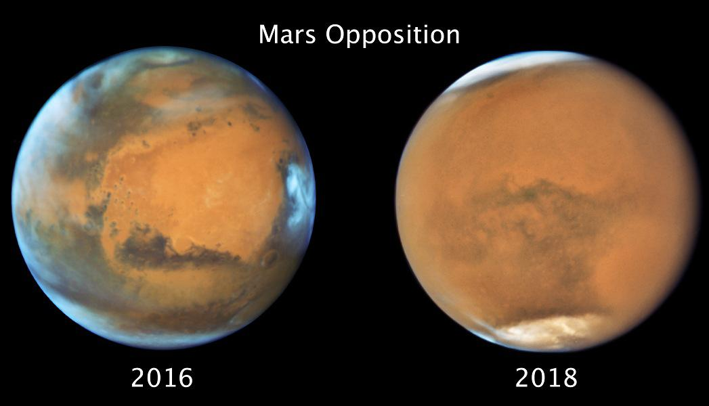

Mars Opposition
Look opposite the Sun in the sky tonight and you'll see Mars at its brightest. Also within days of its closest approach Mars rises at sunset, near its brightest and best for telescopic observers too, except for the dust storm still blanketing the Red Planet. These two Hubble Space Telescope images compare Mars' appearance near its 2016 and 2018 oppositions. In 2016 the martian atmosphere was clear. Captured just days ago, the 2018 image shows almost the same face of Mars. Surface features obscured by dust, the planet's cloud enshrouded south pole is tilted more toward the Sun. Increased heat in the southern hemisphere spring and summer likely triggers planet wide dust storms. Of course, if you look opposite the Sun in the sky tonight, you'll also see a Full Moon near Mars. Skygazers NOT located in North America could see the Red Planet near a Red Moon during a Total Lunar Eclipse.